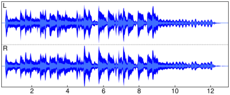
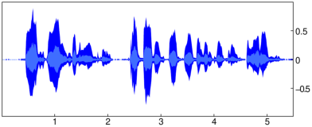
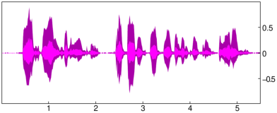
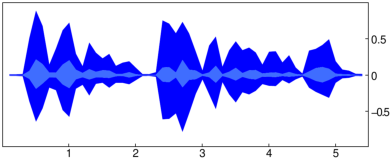
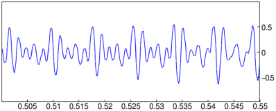

27.2.12 Visualizing waveforms
The plotwav
command displays the waveform of an audio clip.
-
plotwav takes one mandatory argument and
a sequence of optional arguments:
-
A, an audio clip.
- Optionally, opts, a sequence of options each of which is one of:
-
tstep=dt, where dt is the size
(in seconds) of intervals at which the nodes of the polygonal waveform
representation will be computed (by default, dt=duration(A)/500).
- range, which may be one of:
-
range=[offset,length]
for integers offset and length (in samples).
- range=a..b for floating point numbers a and
b (in seconds).
- color, which may be one of:
-
color=[outercolor,innercolor], where
outercolor and innercolor are Xcas colors (by default,
outercolor=216 and innercolor=218).
- color=col, where col is a single color specifying
the value for both outercolor and innercolor.
- plotwav(A ⟨,opts ⟩)
displays the waveform A, in its entirety or over the optional specified range.
If more than one channel is present, they are drawn individually and stacked upon
one another from top to bottom.
If A is a stereo clip, then the upper waveform belongs to the left
channel and the lower waveform to the right channel. The t-axis unit is equal to one second.
- plotwav computes the maximum amplitude and the mean amplitude for positive and
negative signal values in intervals of size dt. The obtained points are connected
into polygons which are drawn on screen. The maximum amplitude is colored with
outercolor and the mean amplitude with innercolor.
Examples
With the file gs-16b-2c-44100hz.wav downloaded from
here (an excerpt from a piece of band music):
| clip1:=readwav("/home/luka/Downloads/gs-16b-2c-44100hz.wav") |
|
| |
a sound clip with 698194 samples at 44100 Hz (16 bit, stereo)
| | | | | | | | | | |
|
plotwav draws the waveform of each channel separately by going from top to bottom:
| plotwav(clip1,range=0.5..12.5) |

With the file gettysburg10.wav downloaded from
here
(a 10 seconds speech):
| clip2:=normalize(readwav("/home/luka/Downloads/gettysburg10.wav"),-1):;
plotwav(clip2,range=0.0..5.5) |

You can choose different colors for the waveform, for example:
| plotwav(clip2,range=0.0..5.5,color=[purple,magenta]) |

By setting the tstep option you can control the “resolution”
at which the waveform is displayed. For example:
| plotwav(clip2,range=0.0..5.5,tstep=0.1) |

To “zoom-in” the waveform, use the range option rather than
the mouse wheel:
| plotwav(clip2,range=0.5..0.55) |
